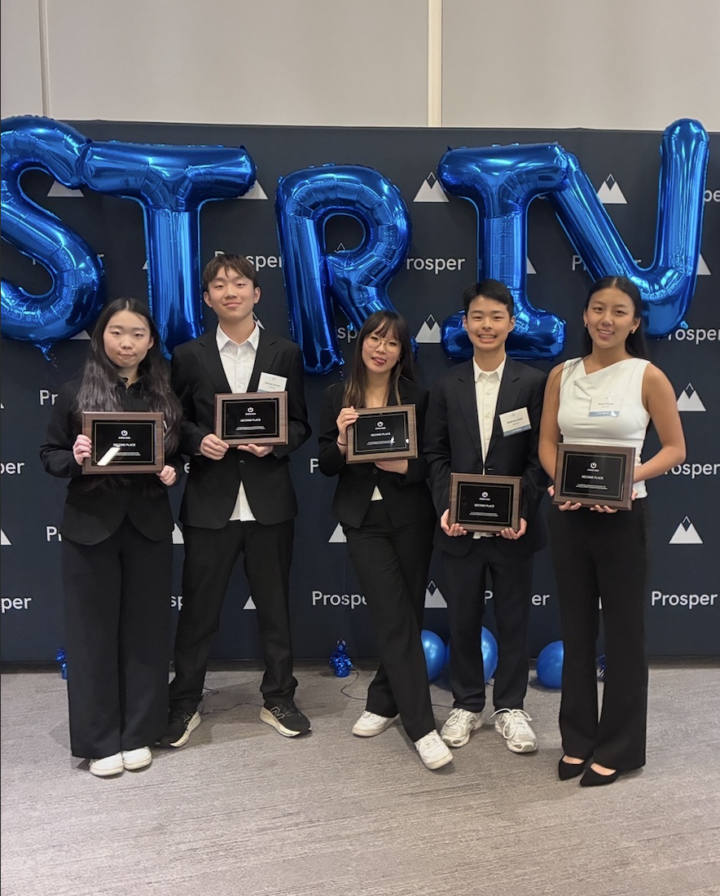
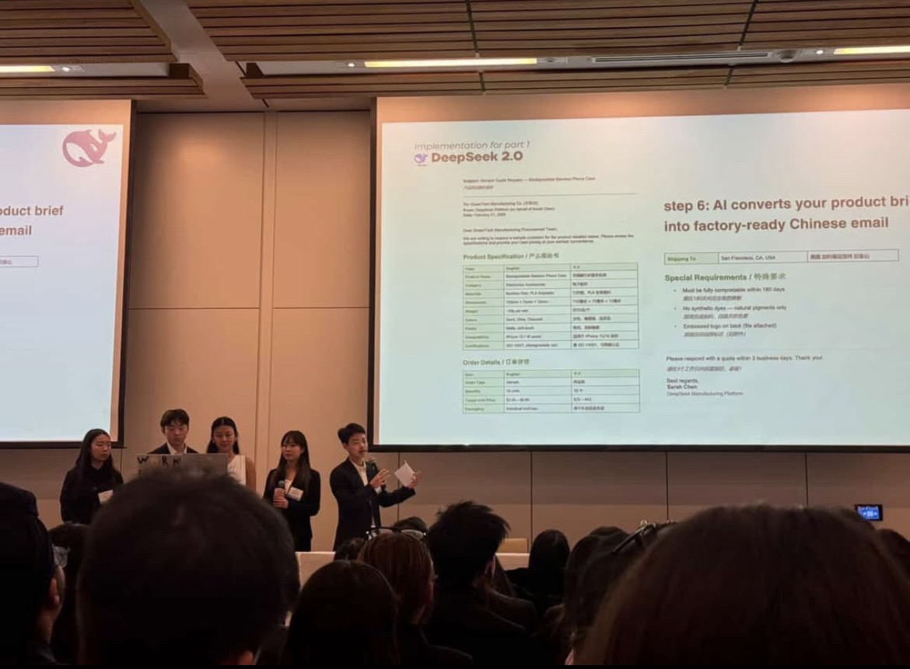

Matthew Chan
Hey there, I'm 15 and obsessed with tech, business, AI and content creation. I love bringing my creative and meaningful ideas to life through Claude Code, and showcasing my work on my insta: matthewashere.com0 (2K+ followers).
Projects
Pinch To Scroll YT Shorts
Chrome extension that uses your webcam to detect pinch gestures via MediaPipe, letting you scroll through YouTube Shorts hands-free. No clicks, no taps, just pinch.
Personal Portfolio
This site. Hand-coded HTML and CSS with glassmorphic cards, staggered animations, and a fixed oil-painting background. No frameworks, no dependencies.
Achievements
Strive 2026
🥈 2nd Place
Placed 2nd out of 60+ teams at UBC Sauder's largest high school business case competition (Prosper Foundation). Built and demoed a working (DeepSeek 2.0) manufacturing app infront of 250+ students and 10+ judges.


Instagram Content Creator
Gained 2,000+ followers and 1.5M+ views creating tech and lifestyle content on Instagram.

I ship fast, I learn faster. Looking for a summer 2026 internship where I can build real products.